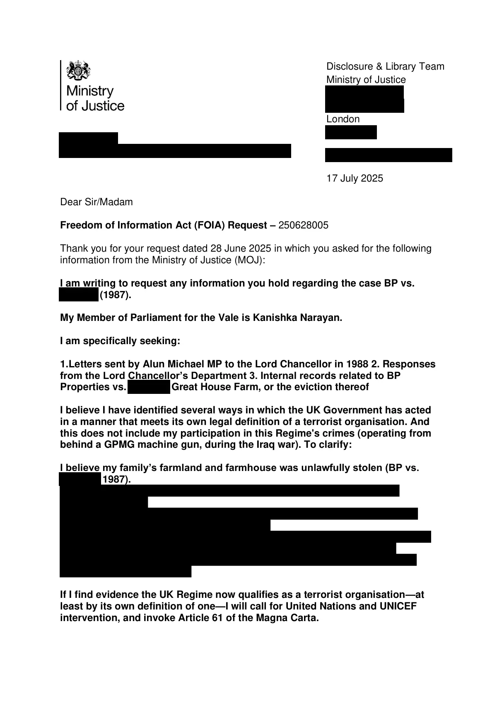

GHF-E106-R69-A1 WhatDoTheyKnow reply
Ministry of Justice FOI 250628005: no information held

Transcript
Requester [email redacted] Disclosure & Library Team Ministry of Justice [address redacted] London [address redacted] [email redacted] 17 July 2025 Dear Sir/Madam Freedom of Information Act (FOIA) Request – 250628005 Thank you for your request dated 28 June 2025 in which you asked for the following information from the Ministry of Justice (MOJ): I am writing to request any information you hold regarding the case BP vs. Requester (1987). My Member of Parliament for the Vale is Kanishka Narayan. I am specifically seeking: 1.Letters sent by Alun Michael MP to the Lord Chancellor in 1988 2. Responses from the Lord Chancellor’s Department 3. Internal records related to BP Properties vs. Buckler, Great House Farm, or the eviction thereof I believe I have identified several ways in which the UK Government has acted in a manner that meets its own legal definition of a terrorist organisation. And this does not include my participation in this Regime's crimes (operating from behind a GPMG machine gun, during the Iraq war). To clarify: I believe my family’s farmland and farmhouse was unlawfully taken (BP vs. Requester, 1987).
Read more
If I find evidence the UK Regime now qualifies as a terrorist organisation—at least by its own definition of one—I will call for United Nations and UNICEF intervention, and invoke Article 61 of the Magna Carta. 2 - I am a certified and experienced military commander and leader. - I left my military career with honours. - My source of employment 2022 - 2024 was the Welsh Government. - As of 2025 I am no longer allegiant or in Oath. - I remain bona fide (never been charged or arrested for a crime) Your request has been handled under the FOIA. The MOJ does not hold any information in the scope of your request. This is because there is no legal or business requirement for MoJ to do so. A search was conducted regarding correspondence with Alun Michael MP to the Lord Chancellor in 1988 which yielded no results. A search was also conducted for internal records related to BP Properties vs. Buckler, Great House Farm, or the eviction thereof; however, the only record held is for the Court of Appeal case, which is also publicly available- Termination of Adverse Possession Through Unilateral Licenses: Insights from BP Properties Ltd v. Buckler ([1987] EWCA Civ 2): England and Wales Court of Appeal (Civil Division) | CaseMine In line with legislation the Lord Chancellor’s Department’s 1988 policy records would have been destroyed. As background, records are reviewed for permanent preservation at 20 years. The year 1988 was reviewed in 2013 which was during the transition period, where the permanent preservation time was reduced from 30 years to 20 years. Ministerial correspondence on its own has a shorter retention, at present the current retention period is 1 year. The FOIA does not oblige a public authority to create information to answer a request if the requested information is not held. The duty is to only provide the recorded information held. Appeal Rights If you are not satisfied with this response, you have the right to request an internal review by responding in writing to one of the addresses below within 40 working days of the date of this response. [email redacted] Disclosure & Library Team, Ministry of Justice, Postal Point 5.22, 102 Petty France, [address redacted] You do have the right to ask the Information Commissioner’s Office (ICO) to investigate any aspect of your complaint. However, please note that the ICO is likely to expect internal complaints procedures to have been exhausted before beginning their investigation. 3 Yours faithfully Disclosure and Library team Information Services Division
Artifact description
Response FOI 250628005 (letter attached): no information held. Searches for the 1988 MP correspondence returned nothing; the only record held is the published Court of Appeal judgment; the Lord Chancellor's Department's 1988 policy records would have been destroyed under retention rules.
| Catalogue ID | GHF-E106-R69-A1 |
|---|---|
| What it is | PDF document from Ministry of Justice. Attached to an email received on 17 July 2025, their reference FOI 250628005. 3 pages. |
| From | Ministry of Justice |
| Email received | 17 July 2025 |
| Their reference | FOI 250628005 |
| Pages | 3 |
| File | FOI 250628005.pdf (121 KB) |
| State | Read |
Our integration
The Ministry of Justice's response to FOI 250628005 on WhatDoTheyKnow: no information held. Searches for the 1988 correspondence with MPs found nothing. The only record held is the published Court of Appeal judgment in BP Properties Ltd v Buckler (1987). The Lord Chancellor's Department's 1988 policy records would have been destroyed under retention rules.
Concern to test: "would have been destroyed" is stated as a policy expectation, not backed by a destruction record.
What cuts against the case: routine destruction of 1988 policy files after the retention period is normal and expected.
Related: Timeline · Disclosure Dartboard